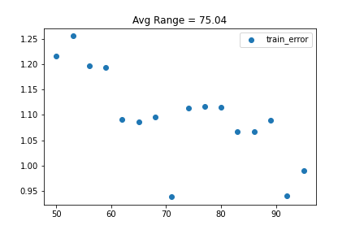
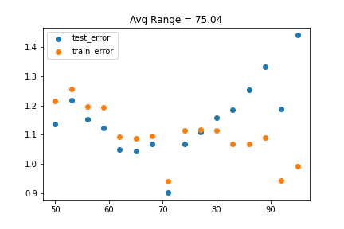
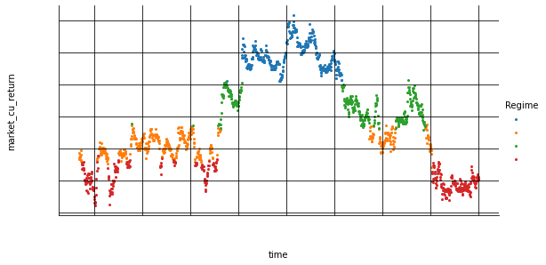
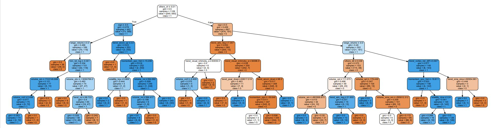

Unsupervised Machine Learning Lasso Regression Clustering
What is Lasso?
Lasso regression is a type of linear regression that uses shrinkage. Shrinkage is where data values are shrunk towards a central point, like the mean. The lasso procedure encourages simple, sparse models (i.e. models with fewer parameters).

I created a new Range value to hold the average minute trading range of the asset.
It is a metric that I would like to compare with when I am making a prediction. The logic behind this comparison is that if my prediction error is more than the minutes range, then it is likely that it will not be useful.
What does this scatter plot tell you? Let me ask you a few questions..
- Is the equation over-fitting?
- The performance of the data improved remarkably as the train data set size increased. Does this mean if we give more data the error will reduce further?
- Is there an inherent trend in the market, allowing us to make better predictions as the data set size increases?
If our algorithm is doing better in the test data compared to the train data, is this observation in itself a red flag.?
There are a few reasons why our test data error could be better than the train data error:
- If the train data had greater volatility (minute range) compared to the test set, then the prediction would also exhibit greater volatility.
- If there was an inherent trend in the market that helped the algo make better predictions.

This graph looks pretty good to me. Without actually looking at the factors based on which the classification was done, we can conclude a few things just by looking at the chart
- Blue regime-- Mean: $62,195.00, Covariance: $18,100.00
- Is the blue zone an area where buy pressure is exhausted?
- Orange regime-- Mean: $61,344.00, Covariance: $8,170.00
- Is the orange zone a state of mean reverting?
- Green regime-- Mean: $61,700, Covariance: $13,573.00
- Could this mid-high mean and mid range covariance regime indicate the breakout of a price range to the up or downside?
- Red regime-- Mean: $61,006.00, Covariance: $10,588.00
- Is the red reqime an area where panic sellers come in to hedge against further loss or is it simply where sell pressure is exhausted?
***Colors and values subject to change each time the kernal is restarted..
Can we use lasso regression to detect market regime so we can conditionally impliment different trading strategies?
Check for future updates because i am sure going to try!!

Random Forest Machine Learning, algo optimization
